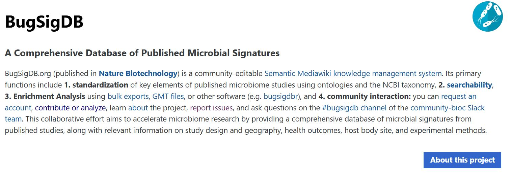

In this project, I worked on cleaning and analyzing a dataset containing information on company layoffs (obtianed from kaggle). The key steps in I used in the data cleaning process included removing duplicates and irrelevant columns, correcting data types and handling missing or null values, creating a staging table for testing transformations without affecting the original data and standardizing dates for consistent analysis.

In this project, I performed exploratory data analysis (EDA) on a dataset of company layoffs to uncover key trends. Using SQL, I analyzed layoffs by company, industry, country, and time period. I identified top industries and companies affected, tracked layoffs over time, and calculated metrics such as total and average layoffs per company and industry.
My data visualization projects using tableau

My data visualization projects using Power BI
In this project, I utilized Excel to explore and analyze sales data comprehensively. This project highlights my skills in data cleaning, preprocessing, and creating insightful visualizations and interactive dashboards, showcasing Excel’s versatility for data-driven storytelling and analysis.

My contributions on BugSigDB, an open-source resource within the Bioconductor project that provides manually-curated, expert-reviewed, syntax-standardized reporting of the published literature on microbial signatures associated with specific diseases, conditions, or environments.